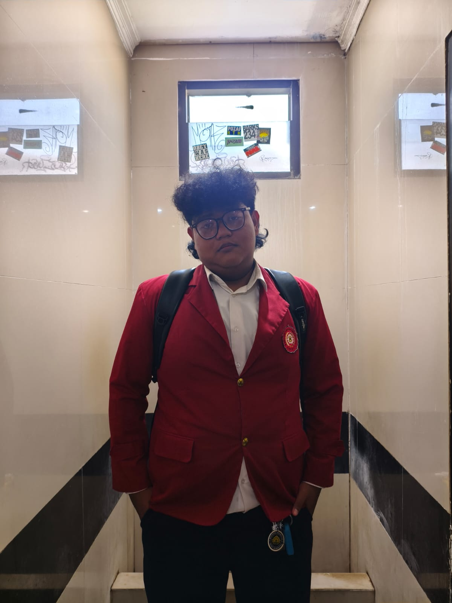

HALO, SAYA MARCELL FEBRIANO WIBOWO
Mahasiswa Teknik Informatika berbasis di Cirebon, Indonesia. Berfokus pada perancangan aplikasi web yang efisien, sistem terstruktur, dan eksplorasi desain digital yang tajam.

Tentang Saya
Saya adalah mahasiswa aktif di Universitas Muhammadiyah Cirebon jurusan S1 Teknik Informatika (Section TI24B). Memiliki ketertarikan besar pada pengembangan web full-stack, rekayasa perangkat lunak, serta pembuatan sistem yang fungsional dan terstruktur.
Dalam pengembangan web, saya terbiasa menggunakan teknologi seperti HTML, CSS, JavaScript, PHP, MySQL, serta Supabase. Selain ngoding, saya juga memiliki standar estetika visual yang kuat—mulai dari tata letak antarmuka web hingga desain grafis.
Informasi Ringkas
- Nama Lengkap Marcell Febriano Wibowo
- Status Akademik Mahasiswa S1 Teknik Informatika (UMC)
- Kelas / NIM TI24B / 240511007
- Domisili Cirebon, Jawa Barat, Indonesia
Keahlian Teknis
Frontend Development
Membangun antarmuka web yang responsif, interaktif, dan estetis.
Backend & Database
Pengelolaan logika sisi server dan struktur basis data yang andal.
Tools & Workflow
Perkakas pendukung pengembangan dan deployment aplikasi.
Koleksi Proyek
Sistem Informasi Sejarah Mobil
Platform web interaktif JDM vehicles, pemutaran suara mesin, dan dashboard admin.
Academic Attendance Manager
Pengelolaan data absensi kelas TI24B ke dalam struktur basis data dan spreadsheet.
Cyber-Theme Poster & Assets
Desain poster presentasi akademik bertema tajam dengan integrasi QR Code.
Pendidikan Saya
Universitas Muhammadiyah Cirebon
S1 Teknik Informatika • Section TI24B (NIM: 240511007)
MAN 2 Kota Cirebon
Pendidikan Menengah Atas / Aliyah
Hubungi Saya
Tertarik berkolaborasi atau mendiskusikan project menarik? Silakan hubungi saya melalui email atau sosial media di bawah.